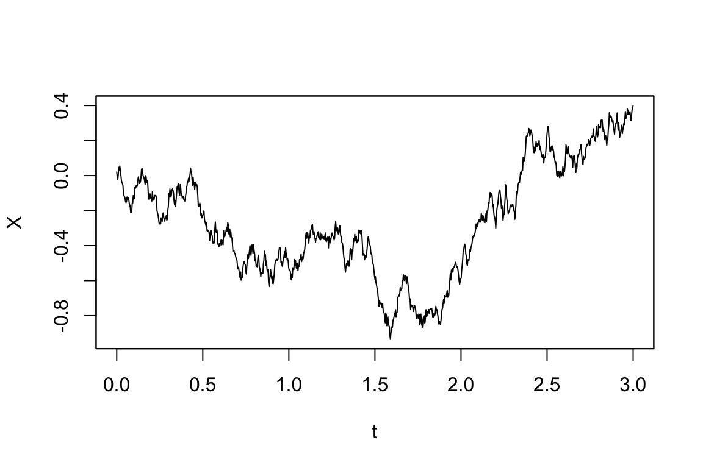
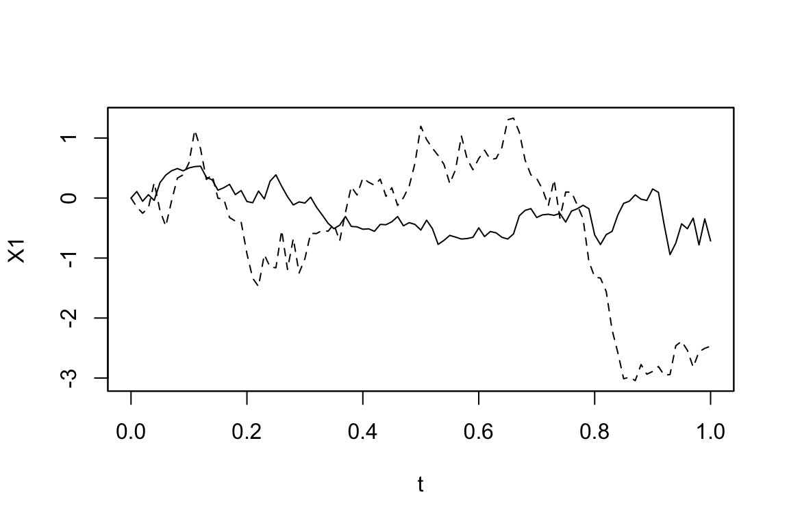
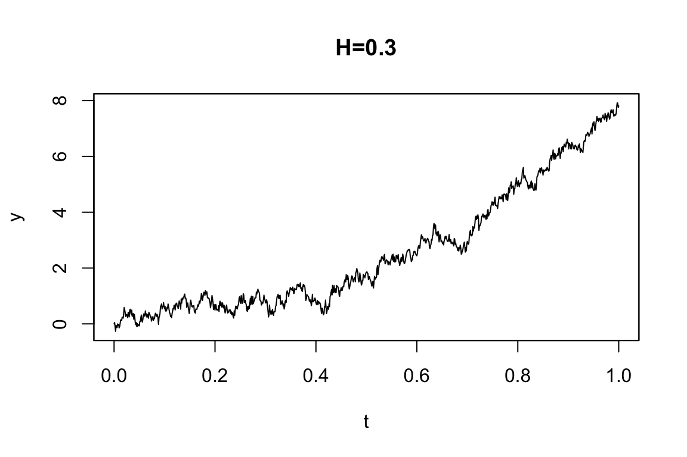
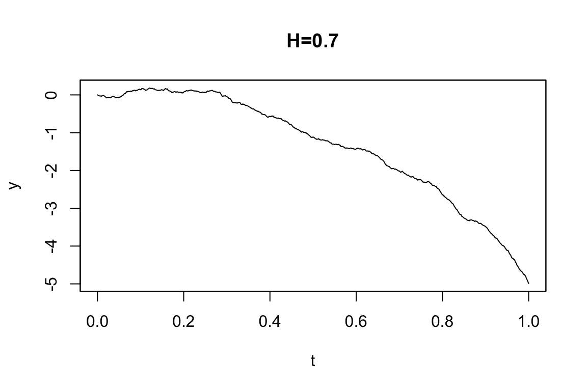
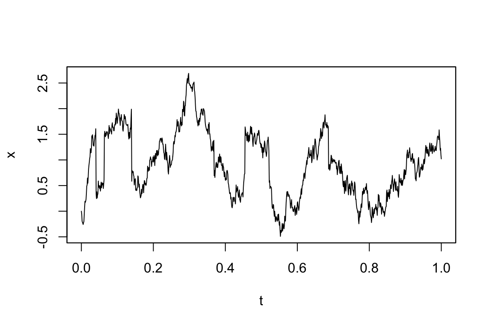
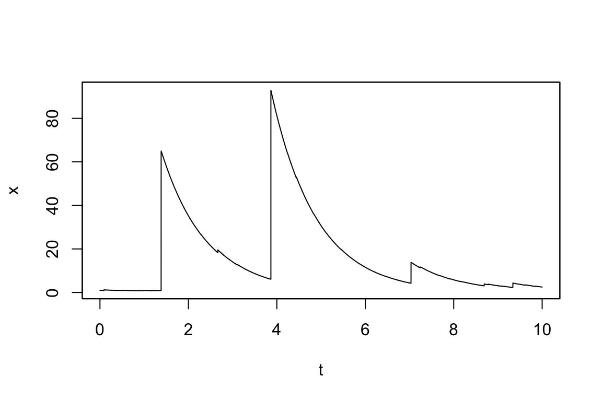
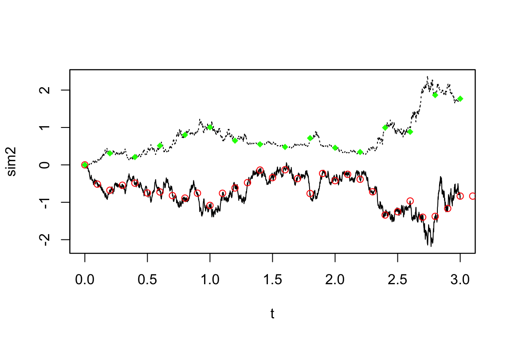
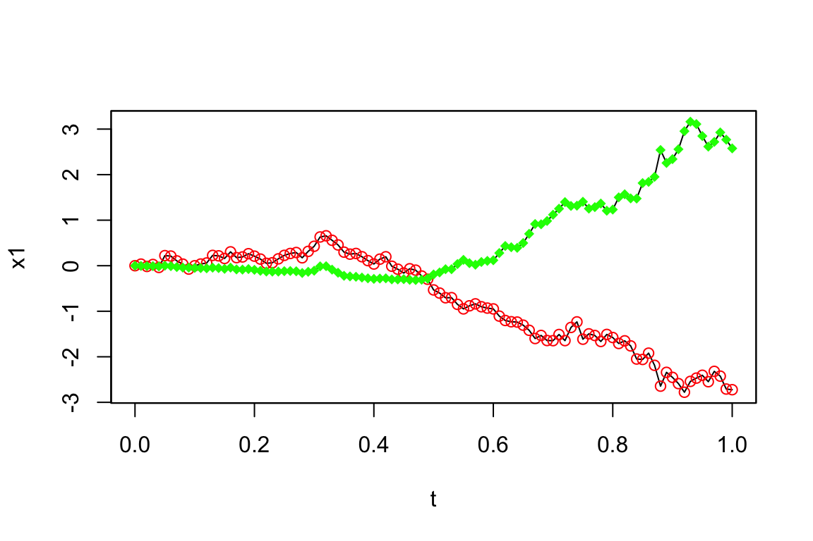

YUIMA による汎函数計算
漸近展開と
setFunctional()
2024-05-18
yuima は確率過程のモデリングとその統計推測を可能にするフレームワークです．従来の i.i.d. 仮定の下での統計推測から，一般の確率過程の統計推測への橋渡しを目標としています．鋭意開発中のパッケージですが，すでに広範なクラスの確率微分方程式のシミュレーションが可能です．本稿では基本的な使い方を紹介します．
A Blog Entry on Bayesian Computation by an Applied Mathematician
$$
$$
R パッケージ yuima は，Lévy 過程または分数 Brown 運動が駆動する確率微分方程式が定める過程という，極めて一般的なクラスの確率過程を扱うための基盤パッケージである．概観には (Brouste et al., 2014) が良い．
加えて，シミュレーションと推論のためのメソッドが提供されている．
R で通常の統計推測に用いられる formula オブジェクト のように，直感的な記法でモデル（yuima.modelオブジェクト）を定義できる．
yuima.modelオブジェクトに対してtoLatex()関数を適用すると，モデルを LaTeX 記法で記述した文字列に変換することもできる．1
setModel()各クラスのが持つスロット（上段）とメソッド（下段），そして継承関係は以下の通りである．
yuimaクラスは５つのスロット yuima.model, yuima.sampling, yuima.data, yuima.characteristic, yuima.functional を持ち，それぞれが別のクラスとして実装されている．
model.parameter クラスは後述の setModel() コンストラクタにより自動で作成され，ユーザーは変更できない．
setModel()コンストラクタyuima.model.Rにおいて次の signature を持つ，yuima.modelオブジェクトのコンストラクタである．
setModel <- function(drift=NULL, diffusion=NULL, hurst=0.5, jump.coeff=NULL, measure=list(), measure.type=character(), state.variable="x", jump.variable="z", time.variable="t", solve.variable, xinit=NULL){...}この setModel() 関数により，最も一般的には次の形をした確率微分方程式が定義できる：
\[ dX_t=a(t,X_t,\alpha)dt+b(t,X_t,\beta)dW_t+c(t,X_t,\gamma)dZ_t,\qquad X_0=x_0. \]
\(W\) としては Brown 運動だけでなく，一般の Hurst 指数 \(H\) を持った分数 Brown 運動 \(W^H\) を取ることができる．
\(c\ne0\) とすることでジャンプを導入したモデルを指定することもできる．
Ornstein-Uhlenbeck 過程 \[ dX_t=\theta(\mu-X_t)\,dt+\sigma\,dW_t,\quad (\mu,\theta,\sigma,X_0)=(0,1,0.5,0) \] を定義してシミュレーションを実行するためのサンプルコードは次の通り．4
# 確率微分方程式モデルの設定
model <- setModel(drift = "theta*(mu-X)", diffusion = "sigma", state.variable = "X")
# サンプリングスキームの設定
sampling <- setSampling(Initial = 0, Terminal = 3, n = 1000)
# yuimaオブジェクトの作成
yuima <- setYuima(model = model, sampling = sampling)
# シミュレーションの実行
simulation <- simulate(yuima, true.parameter = c(mu = 0,theta = 1, sigma = 0.5), xinit = 0.02)plot(simulation)
まず，所望のモデルを行列の言葉で書く．例えば，2次元の場合で次のようなモデルを考える： \[ \begin{pmatrix}dX_t^{(1)}\\dX_t^{(2)}\end{pmatrix}=\begin{pmatrix}-3X_t^{(1)}\\-X_t^{(1)}2X_t^{(2)}\end{pmatrix}dt+\begin{pmatrix}1&0&X_t^{(2)}\\X_t^{(1)}&3&0\end{pmatrix}\begin{pmatrix}dW_t^{(1)}\\dW_t^{(2)}\\dW_t^{(3)}\end{pmatrix} \]
シミュレーションは次のように，各項の係数をベクトル・行列の形式で setModel へと引き渡すことで行える．5
solve_variable <- c("X1", "X2")
drift <- c("-3*X1", "-X1-2*X2")
diffusion <- matrix(c("1", "X1", "0", "3", "X2", "0"), 2, 3)
model <- setModel(drift=drift, diffusion=diffusion, solve.variable=solve_variable)
simulation <- simulate(model)plot(simulation, plot.type="single", lty=1:2)
\(H\ne1/2\) のとき，もはや Markov 過程でもセミマルチンゲールでもない．特に \(H>1/2\) のときに，\(W^H\) は長期的な依存を持った振る舞いをしこれが多くの応用を呼んでいる．
この \(W^H\) に対して，SDE \[ dX_t=a(X_t)dt+b(X_t)dW_t^H \] で定まるモデルを定義できる．(Brouste et al., 2014, pp. 3.5節 p.15)
例えば分数 OU 過程 \[ dY_t=3Y_tdt+dW_t^H \] は次のように定義する：
mod4A <- setModel(drift="3*y", diffusion=1, hurst=0.3, solve.var="y")
mod4B <- setModel(drift="3*y", diffusion=1, hurst=0.7, solve.var="y")
sim1 <- simulate(mod4A, sampling = setSampling(n=1000))
sim2 <- simulate(mod4B, sampling = setSampling(n=1000))
par(mfrow=c(2,1), mar=c(2,3,1,1))plot(sim1, main="H=0.3")
plot(sim2, main="H=0.7")
このシミュレーション法は Cholesky 法と (Wood and Chan, 1994) 法から選択が可能である．simulate メソッドのキーワード引数 methodfGn="WoodChan", methodfGn="Cholesky" によって利用可能である．
複合 Poisson 過程 \(Z_t\) とは，Poisson 時間に特定の分布に従うサイズの跳躍が起こるという過程である．
複合 Poisson 過程 \(Z_t\) を用いて， \[ dX_t=a(t,X_t,\theta)dt+b(t,X_t,\theta)dW_t+dZ_t \] という SDE を通じてジャンプを持つ過程が定義できる．
さらに \(Z_t\) の項に係数 \(c\) を持たせるには，\(X\) のジャンプを定めるランダム測度（≒確率核） \[ \mu(dt,dz)=\sum_{s>0}1_{\left\{\Delta Z_s\ne 0\right\}}\delta_{(s,\Delta Z_s)}(dt,dz) \] により，複合 Poisson 過程が \[ Z_t=\int^t_0\int_{\lvert z\rvert\le1}z(\mu(ds,dz)-\nu(dz)ds)+\int^t_0\int_{\lvert z\rvert>1}z\mu(ds,dz) \] と表せ，ジャンプ過程 \(X\) が，一般の関数 \(c\) を用いて \[ dX_t=a(t,X_t,\theta)dt+b(t,X_t,\theta)dW_t+\int_{\lvert z\rvert>1}c(X_{t-},z)\mu(dt,dz) \] \[ \qquad+\int_{0<\lvert z\rvert\le1}c(X_{t-},z)(\mu(dt,dz)-\nu(dz)dt) \] と表せる．
\(\nu\in\mathcal{P}(\mathbb{R}^d)\) が Lévy 測度 であるとは， \(\nu(\{0\})=0\) かつ \[ \int_{\mathbb{R}^d}(1\land\lvert z\rvert^2)\nu(dz)<\infty \] を満たすことをいう．
例えば，強度 \(\lambda=10\) で Gauss 分布を跳躍測度に持つ Lévy 過程は，measure.type="CP" によって指定する．
平均 \(0\) のジャンプ OU 過程 \[ dX_t=-\theta X_tdt+\sigma dW_t+dZ_t \] は次のように定義できる：
mod5 <- setModel(drift=c("-theta*x"), diffusion="sigma", jump.coeff="1",
measure=list(intensity="10", df=list("dnorm(z,0,1)")), measure.type="CP",
solve.variable="x")
sim5 <- simulate(mod5, true.p = list(theta=1, sigma=3), sampling=setSampling(n=1000))plot(sim5)
一方で，逆正規分布の大きさのジャンプを持つ Lévy 測度 \(\nu\) をもち，Poisson 成分を持たない OU 過程 \[ dX_t=-xdt+dZ_t \] は次のように定義できる：
mod6 <- setModel(drift="-x", xinit=1, jump.coeff="1",
measure.type="code", measure=list(df="rIG(z,1,0.1)"))
sim6 <- simulate(mod6, sampling=setSampling(Terminal=10, n=10000))plot(sim6)
simulate() と setSampling()simulate() 関数の使い方simulate() は yuima または yuima.model で定められたモデルから，Euler-Maruyama 法によるシミュレーションを実行する関数．6
ソースコードは simulate.R．ポリモーフィックな実装がなされている．
simulate(object, nsim=1, seed=NULL, xinit, true.parameter, space.discretized = FALSE, increment.W = NULL, increment.L = NULL, method = "euler", hurst, methodfGn = "WoodChan", sampling=sampling, subsampling=subsampling, ...)返り値は yuima オブジェクトである．しかし，その yuima.data フィールドにはシミュレーション結果が格納されており，それに対して plot() を使う．
最も広く使われているシミュレーション法である．
時間にグリッド \(0=\tau_0<\tau_1<\cdots<\tau_j<\cdots\) を導入し，連続過程 \(\{X_t\}_{t\in\mathbb{R}_+}\) の離散化 \(\{\widetilde{X}_{\tau_j}\}_{j\in\mathbb{N}}\) を \[ \widetilde{X}_{\tau_{j+1}}:=\widetilde{X}_{\tau_j}+b(\tau_j,\widetilde{X}_{\tau_j})(\tau_{j+1}-\tau_j)+c(\tau_j,\widetilde{X}_{\tau_j})(W_{\tau_{j+1}}-W_{\tau_j}) \] と定義する．
\(W_{\tau_{j+1}}-W_{\tau_j}\overset{\text{iid}}{\sim}\mathrm{N}(0,\tau_{j+1}-\tau_j)\) を利用してサンプリングできる．
simulate メソッドはこの方法も（ジャンプを持たない過程について）実装している．ただし，現状，駆動過程が1次元のSDEに対してのみである．
これは，時間離散化 \(\{\tau_j\}_{j\in\mathbb{N}}\subset\mathbb{R}\) は次のように取る方法である： \[ \tau_0:=0,\quad\tau_{j+1}:=\inf\left\{t>\tau_j\mid\lvert W_t-W_{\tau_j}\rvert=\epsilon\right\} \] ただし，実装の上では \[ \epsilon^2:=\frac{T}{n}=\Delta_n \] としている．
この方法は通常の時間離散化法よりも3倍高速になることが経験的に知られている．
これは space.discretized=TRUE で指定できる．デフォルトは =FALSE となっており，時間離散化の方である．
他にも (Iacus, 2008) のシミュレーション法が実装予定である．
setSamplingコンストラクタsimulate 関数は yuima.sampling オブジェクトも引数として sampling = samp と取れる．
そしてこのサンプリングスキームは出力にそのまま引き継がれる．
setSampling.R
setSampling(Initial = 0, Terminal = 1, n = 100, delta,
grid, random = FALSE, sdelta=as.numeric(NULL),
sgrid=as.numeric(NULL), interpolation="pt" )例えば次の2次元モデルを考える
\[ dX_t^{(1)}=-\theta X^{(1)}_tdt+dW_t^{(1)}+X_t^{(2)}dW_t^{(3)} \] \[ dX_t^{(2)}=-(X_t^{(1)}+\gamma X_t^{(2)})dt+X_t^{(1)}dW_t^{(1)}+\delta dW_t^{(2)} \]
時区間 \([0,3]\) 上のグリッドから \(n=3000\) の粒度で観測するサンプリングオブジェクトは次のように定義する：
sol <- c("x1", "x2")
b <- c("-theta*x1", "-x1-gamma*x2")
s <- matrix(c("1", "x1", "0", "delta", "x2", "0"), 2, 3)
myModel <- setModel(drift=b, diffusion=s, solve.variable=sol)
samp <- setSampling(Terminal=3, n=3000)sim2 <- simulate(myModel, sampling=samp)
str(sim2@sampling)Formal class 'yuima.sampling' [package "yuima"] with 11 slots
..@ Initial : num 0
..@ Terminal : num [1:2] 3 3
..@ n : int [1:2] 3000 3000
..@ delta : num 0.001
..@ grid :List of 1
.. ..$ : num [1:3001] 0 0.001 0.002 0.003 0.004 0.005 0.006 0.007 0.008 0.009 ...
..@ random : logi FALSE
..@ regular : logi TRUE
..@ sdelta : num(0)
..@ sgrid : num(0)
..@ oindex : num(0)
..@ interpolation: chr "pt"これはsampそのものであり，確かに出力に引き継がれている．
subsampling関数の使い方２つの独立な指数分布を指定することで，Poisson 到着時間を用いてサンプリングすることができる．
このような yuima.sampling オブジェクトは次のように定義する：
newsamp <- setSampling(random=list(rdist=c(function(x)
+ rexp(x, rate=10), function(x) rexp(x, rate=20))))これを用いてサブサンプリングを実行できる：
newdata <- subsampling(sim2, sampling=newsamp)
plot(sim2, plot.type="single", lty=c(1,3), ylab="sim2")
points(get.zoo.data(newdata)[[1]], col="red")
points(get.zoo.data(newdata)[[2]], col="green", pch=18)
赤が \(X_t^{(1)}\)，緑が \(X_t^{(2)}\) の見本道でどこがサブサンプリングされたかを示している．
このサンプリング法はランダムに行った．これを示すフラグがregularである：
str(newsamp@regular) logi FALSE一方で，決定論的に，決まった周波数でサブサンプリングもできる：
newsamp2 <- setSampling(delta=c(0.1, 0.2))Warning in yuima.warn("'Terminal' (re)defined."):
YUIMA: 'Terminal' (re)defined.newdata2 <- subsampling(sim2, sampling=newsamp2)
plot(sim2, plot.type="single", lty=c(1,3), ylab="sim2")
points(get.zoo.data(newdata2)[[1]], col="red")
points(get.zoo.data(newdata2)[[2]], col="green", pch=18)
赤色のサブサンプリングは，緑色の２倍の頻度（半分の周波数）で行われている．
シミュレーション研究で，よく高頻度のサンプリングを行った後，推定のためにより低い頻度でのデータを抽出する，ということが行われる．これは１行で表現できる：
Y.sub <- simulate(myModel, sampling=setSampling(delta=0.001, n=1000), subsampling=setSampling(delta=0.01, n=100))
Y <- simulate(myModel, sampling=setSampling(delta=0.001, n=1000))plot(Y.sub, plot.type="single")
points(get.zoo.data(Y.sub)[[1]], col="red")
points(get.zoo.data(Y.sub)[[2]], col="green", pch=18)
zooとの依存関係サンプリングとサブサンプリングにおいて，zooというパッケージ (Zeileis and Grothendieck, 2005) が時系列データを保存するために内部で用いられている．
より柔軟な時系列データの保存法ができたら，この dependency は脱したいと考えられているようである．
setYuima() の help ページに ‘PLEASE FINISH THIS’ が２箇所ある．yuimadocs パッケージとは？(Brouste et al., 2014) 第７節も参照．↩︎
R-Forge とは，SourceForge に似た，R 言語のパッケージ開発者向けの協力的な開発環境を提供するプラットフォーム．↩︎
rdrr は CRAN や GitHub だけでなく，Bioconductor や R-Forge も含めて検索可能にしているサイト．↩︎
モデルの左辺 \(dX_t\) は yuima.model のスロット solve.variable が state.variable に暗黙のうちに一致させているところから暗黙に読み込んでいる．↩︎
１次元の場合と違って，左辺を明示するためにsolve.variableのベクトルとしての指定が欠かせなくなる．(Brouste et al., 2014) 第3.4節 pp.12-13．↩︎
ただし，分数 Gauss ノイズが仮定された場合は Cholesky 法または (Wood and Chan, 1994) の手法による．↩︎